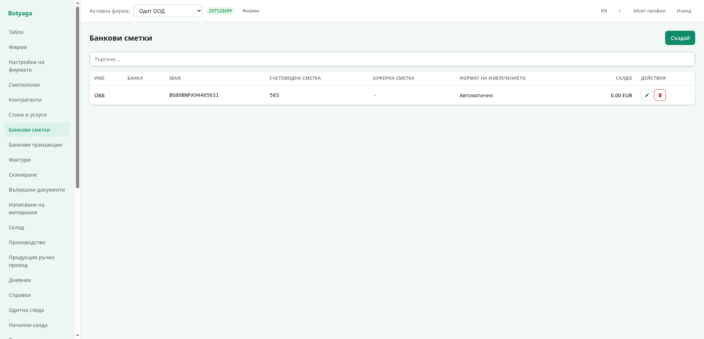

Начало · Банка
Банка
Банкови сметки, извлечения и осчетоводяване.
Банкови сметки
Повече от една банкова сметка; за всяка — IBAN/BIC, банка, валута и GL сметка. В SAF-T се извеждат сметките на фирмата.
Извлечения и осчетоводяване
Извлечението се зареждане от файл в избран формат; редовете се разпределят по сметки с потвърждение. Плащанията могат да се маркират в ДДС дневника като плащане.
